title: linux内核编译+添加api
date: 2020-03-05 14:36:15
tags:
- 学校作业
- 操作系统
实验环境:ubuntu 14.04 新内核版本:4.6.4
新内核
最好选择比原内核高一点点的版本，之前试过5.x版本的，结果出现了很多错误…
前期准备
进入/usr/src文件夹1
cd /usr/src
下载内核压缩包1
wget 链接
解压1
tar -xvf linux-4.6.4.tar.xz
安装相关依赖1
2
3
4
5
6
7sudo apt-get update
sudo apt-get install libncurses5-dev libssl-dev
sudo apt-get install build-essential openssl
sudo apt-get install zlibc minizip
sudo apt-get install libidn11-dev libidn11
sudo apt-get install bison
sudo apt-get install flex
进入linux解压文件夹内1
cd linux-4.6.4
编译准备
1 | sudo make clean |
进入图形化界面后直接Save后退出
编译
1 | sudo make -j2 //双核编译内核，减少编译时间 |
编译后的界面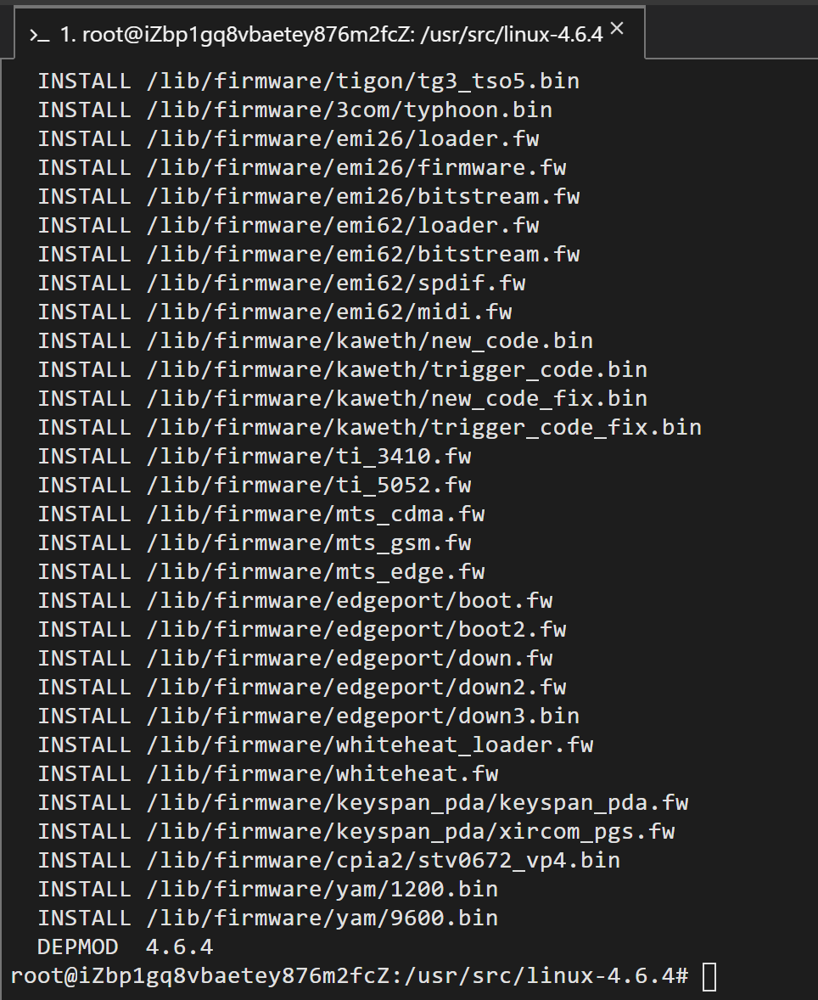
启动新内核
重启之后就自动选择了更新的内核
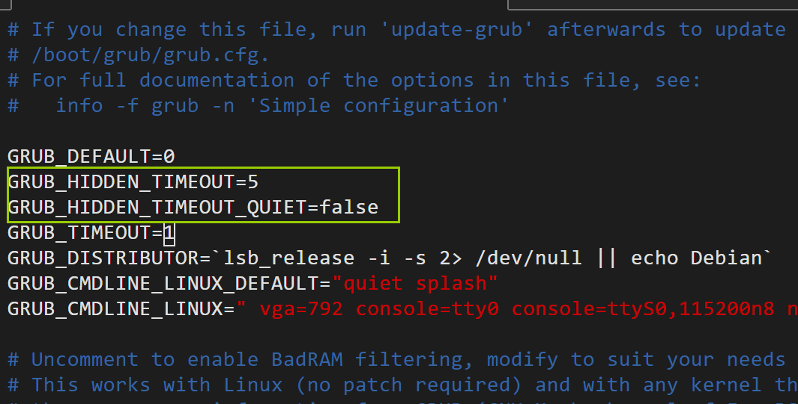
添加系统API-输出学号
参考：操作系统作业：Ubuntu编译一个新内核以及添加系统调用
添加系统调用号
进入内核目录下1
cd /usr/src/linux-4.6.4
修改系统调用表arch/x86/entry/syscalls/syscall_64.tbl文件(32位为syscall_32.tbl)
！
添加我们需要的hello_world的系统调用号
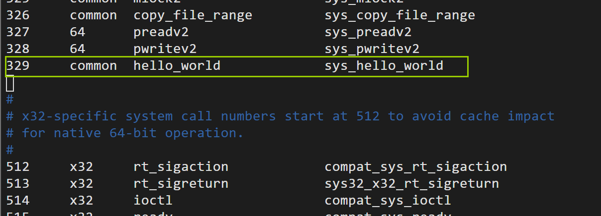
关于应用二进制的接口，任选其一即可
{kind=link}
申明系统调用服务例程原型
进入内核文件夹下的include/linux/syscalls.h，修改其内容
在末尾添加1
asmlinkage long sys_hello_world(void);
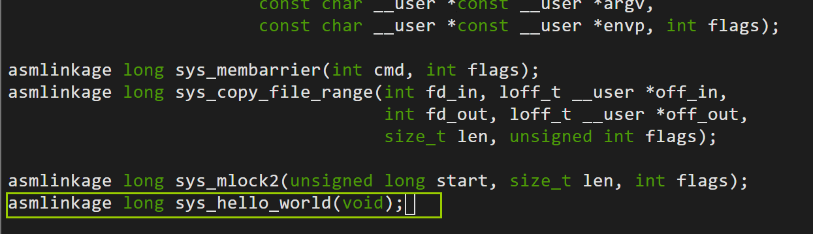
实现系统调用服务例程
进入内核文件夹下的kernel/sys.c修改,在文件末尾添加1
2
3
4SYSCALL_DEFINE0(hello_world){
printk("hello,18113111\n");
return 0;
}
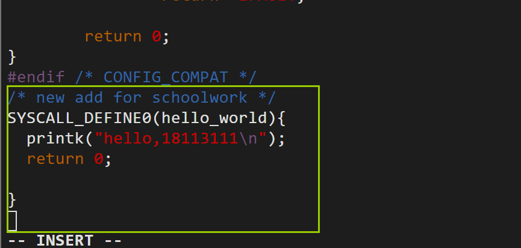
重新编译内核
在这个过程中出现了错误
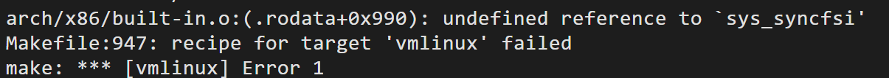1
2
3arch/x86ilt-in.o:(.rodata+0x990): undefined reference to `sys_syncfsi'
Makefile:947: recipe for target 'vmlinux' failed
make: *** [vmlinux] Error 1
在排查错误期间在kernel/sys.c发现一个错误好蠢啊
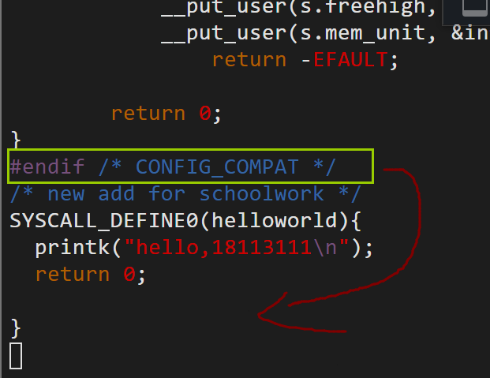
这里的语句要放进#endif内
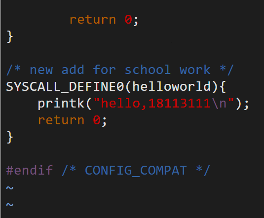顺便把所有的hello_world替换成了helloworld
但是这个错误和编译后出现的错误关系并不是很大…
根据报错语句我们在arch/x86/entry/syscalls/syscall_64.tbl查找该函数
发现
估计是在进入编辑模式的时候不小心多打了一个i…
解决之后再次编译
编写用户态程序测试新调用
新建test.c文件1
2
3
4
5
6
7
int main(){
syscall(__NR_mysyscall);
}
编译后运行1
2
3sudo gcc -o test test.c
sudo ./test
sudo dmesg
可以看到运行结果成功显示了
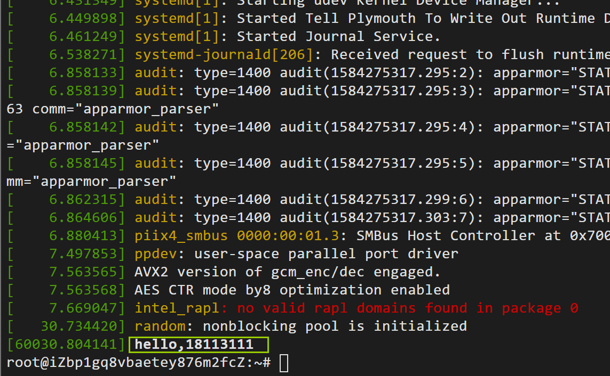
添加系统API-修改/读取nice值
参数含义：
pid：进程ID
flag：若为0，则表示读取nice的值；若为1，则表示修改nice的值。
nicevalue：为指定的进程设置新的nice。
prio，nice：指向进程的优先级和nice值。
返回值：系统调用成功时返回0；失败时返回错误码EFAULT。
步骤相同的地方直接略过了
添加系统调用号
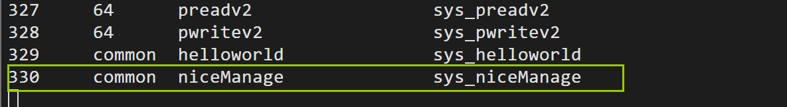
申明系统调用服务例程原型

实现系统调用服务例程
根据进程号pid找到相应的进程控制块PCB（因为进程控制块中记录了用于描述进程情况及控制进程运行所需要的全部信息，nice值和优先级正是其中的一部分）；
根据PCB读取它的nice值和优先级prio；
根据PCB对相应进程的nice值进行修改；
将得到的nice值和优先级prio进行返回。1
2
3
4
5
6
7
8
9
10
11
12
13
14
15
16
17
18
19
20
21
22
23SYSCALL_DEFINE5(niceManage,pid_t,pid,int,flag,int,nicevalue,void __user *,prio,void __user *,nice)
{
int cur_prio,cur_nice;
struct pid *ppid;
struct task_struct *pcb;
ppid=find_get_pid(pid);//返回pid
pcb=pid_task(ppid,PIDTYPE_PID);//返回task_struct
if(flag ==1)
{
set_user_nice(pcb,nicevalue);//修改进程nice值
}
else if(flag!=0)
{
return EFAULT;
}
cur_prio=task_prio(pcb);//返回当前prio值
cur_nice=task_nice(pcb);//返回当前nice值
copy_to_user(prio,&cur_prio,sizeof(cur_prio));//将prio拷贝到用户空间
copy_to_user(nice,&cur_nice,sizeof(cur_nice));//将nice拷贝到用户空间
return 0;
}
编译内核
出现了个错误，发现又是打字打错了…
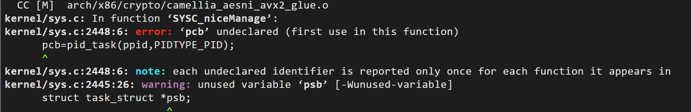
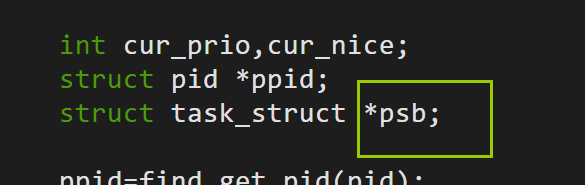
改成pcb再重试一次
编写用户态程序测试新调用
1 |
|
测试结果
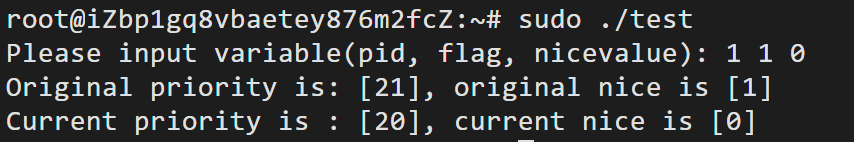
添加系统api-实现1-10的加法
之前魔改很多次都失败了(心态崩了)
所以干脆选简单一点的来实现
直接以第二个api为模板改的
添加系统调用号
申明系统调用服务例程原型
1 | asmlinkage long sys_pidRead(int num1,int num2,void __user* usrRes); |
实现系统调用服务例程
1 | SYSCALL_DEFINE3(pidRead,int,num1,int,num2,void __user *,usrRes) |
编译内核
编写用户态程序测试新调用
1 |
|
编译结果
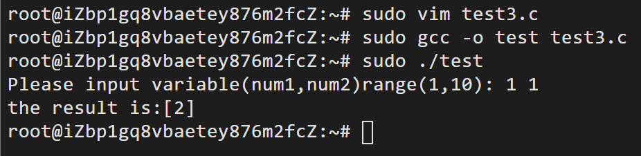